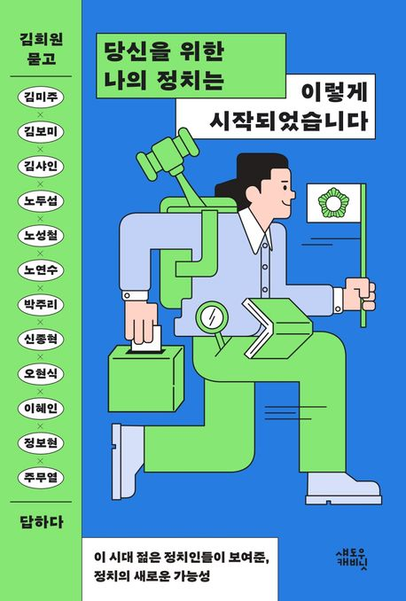

✊ 재정주권운동이란?
세금과 예산의 주인은 시민입니다. 재정주권운동은 모든 시민이 우리 동네 예산이 어디에, 어떻게 쓰이는지 알고 · 감시하고 · 참여할 권리를 되찾는 시민운동입니다. '나라살림 돋보기(우리동네 3초 확인)'는 그 실천 도구로, 전국 243개 지방자치단체의 공식 공시 데이터를 누구나 3초 만에 확인할 수 있도록 만들었습니다. 지방재정뿐 아니라 중앙정부·정부 부처 예산도 함께 살핍니다.
예산·집행·계약·금고 이자율·청렴도 — 흩어진 공시 데이터를 한 화면에서 쉽게 확인합니다.
수의계약 과다, 집행 지연 같은 이상 신호를 자동으로 짚어 시민의 눈으로 살핍니다.
발견한 문제를 AI로 다듬어 담당 부서와 지방의회에 직접 의견으로 보냅니다.
지방재정은 이곳 나라살림 돋보기에서, 중앙정부·정부 부처 예산은 「재정주권시민행동」에서 확인하세요.

정치 13년, 의원 8년 — 여러분과 함께한 순간들
사진 위에 마우스를 올리면 멈추고, 누르면 크게 볼 수 있습니다.
정책·민원 찾기
궁금한 내용을 입력하면 관련 정책과 담당부서를 찾습니다. 관련 정책, 담당 부서, 연락처, 근거를 한 번에 확인할 수 있습니다.
우리 동네 예산
선택한 지역의 예산과 집행 현황을 보여드립니다. (실시간 공시 기준)
우리 동네 계약 현황
선택한 지역의 계약 현황과 이상신호를 보여드립니다. (나라장터 실시간 연동)
우리 동네 3초 진단
지역을 선택하면 진단 결과가 표시됩니다. 결과는 예산·집행·계약·추이·비교 탭으로 이어집니다.
💬 쉬운 말 요약
데이터 시각화
세입·세출·집행·계약·추이를 한눈에
💰 세입 재원별 구성
🏗️ 분야별 세출예산 (14대 분야)
📈 세출 집행률 추적 (분기)
📝 계약 현황 (수의 vs 경쟁)
🗂️ 회계별 예산현황
💴 금고(은행) 약정 이자율
행정안전부가 2026년 1월 27일 전국 243개 지방자치단체의 금고 약정 이자율을 통합 공개했습니다. 전국 평균과 우리 지역 수준을 함께 확인할 수 있습니다.
🕰️ 최근 5년 예산·채무 추이
🧭 재정 체질 비교 (레이더)
전국 지자체 비교·순위
우리 동네 재정, 전국에서 몇 등일까요? 해당 행을 클릭하면, 그 지역의 전용 상세 페이지가 열립니다.
| 순위 | 지역 | 등급 | 재정자립도 | 재정자주도 | 1인당 예산 | 채무비율 | 집행률 | 종합점수 |
|---|
우리동네 vs 비교하기
두 지자체를 같은 기준으로 비교합니다. 지표별 전국 순위·상위 비율·전국 평균 대비·우위까지 한눈에 볼 수 있습니다.
| 지표 | 우리동네 | 비교 대상 | 전국 평균 | 우위 |
|---|
※ 순위·상위 %는 전국 243개 자치단체(광역 17·기초 226) 기준이며, 제주 2개 행정시를 포함해 표시합니다. ‘1인당 예산’은 지자체 유형(군·시·구)에 따라 달라 단순 우열보다 참고 지표입니다.
이 사이트는 어떻게 분석하나요? (재정 온톨로지)
숫자 너머의 '관계'를 읽어 이상 신호를 자동 탐지하는 분석 기법 — 이 사이트가 어디서 어떻게 작동 중인지 한눈에
학술·기술 공신력 — NABO 공식 분석 기법 기반
v1.3 기술 적용본 플랫폼은 국회예산정책처(NABO)·한국재정정보원(FIS)·행정안전부 30개 공식문서에서 정립한 재정 온톨로지(Fiscal Ontology v1.3)를 적용합니다. 단순 수치 시연이 아닌, 학술 기반의 고도화된 3대 매커니즘이 작동합니다.
한 줄 정의 — 데이터들이 어떻게 서로 연결돼있는지 정리한 "의미 지도"
단순히 "예산 1,000억"이 아니라, 그 1,000억이 어떤 분야 → 사업 → 계약자 → 수혜자 → 법령에 묶여있는지 관계망 전체를 본다는 뜻입니다. 숫자만 보면 놓치는 자전거래·일감몰아주기 같은 이상 신호가 관계를 따라가면 보입니다.
② 4단 자금흐름 → 상세페이지 "4단 자금추적" — 국고→광역→기초→수혜자→계약자 추적
③ 5가지 위험 패턴 자동 탐지 → 상세페이지 "AI 부실징후 자동 탐지" — 짜고 치는 거래·단가 부풀리기 등
④ 정책↔법령↔조례↔부서↔예산 연결 → 메인 "정책 검색" 카드 — 한 화면에 모든 관계 표시
숫자를 따로 보지 않고, 사업 · 재원 · 수혜자 · 계약자를 함께 읽어 이상 징후를 찾습니다.
예산이 흘러가는 길 [예산 짜기 ➔ 상급기관 보조금 교부 ➔ 최종 수혜자 ➔ 실제 계약 업체]를 따라가며 '새는 돈'과 '적신호'를 자동으로 잡아냅니다. (국회예산정책처 공식 분석 기법 기반)
기능별 6레벨 위계
분야부터 내역사업까지 — 내역사업 단위에서야 수혜자·공모여부·실집행 차이가 드러나 효율성 분석이 가능합니다.
이런 신호가 보이면 더 살펴봐야 합니다
아래 신호가 뜨면 그 사업을 한 번 더 들여다볼 가치가 있습니다 (상세페이지에서 자동 탐지)
🔴 자전거래 의심
보조금을 받은 곳과 계약을 따낸 업체가 사실상 같은 주인으로 의심되는 구조입니다. 대표자·주소·계열사가 겹치면 강한 적신호입니다.
🟠 단가 이상치
비슷한 사업들에 비해 계약 단가가 비정상적으로 높게 잡힌 경우입니다. 특히 시공·기자재 사업에서는 산출 근거를 반드시 확인해야 합니다.
🟠 계약 집중 의심
소수 사업·소수 업체에 예산·수주가 과도하게 집중됩니다. 경쟁 제한·특정업체 편중 위험입니다.
🔴 수의계약 비중 과다
경쟁입찰 없이 수의계약 비중이 높아 경쟁성이 약합니다. 담합·특혜 감시의 1순위 지표입니다.
🟠 집행 지연
편성 대비 집행이 더디거나 연말에 쏠려 이월·불용·부실집행 위험. 분기별 집행 추적으로 포착.
🧱 4단계 자금 추적
국고 → 광역 → 기초 → 최종수혜자 → 계약업체로 이어지는 돈의 흐름을 단계별로 따라갑니다.
단계가 많을수록 새는 길목·이해상충 감시 지점이 늘어납니다.
재정 교과서 · 용어 사전 · 🤖 AI 도우미
지표 뜻과 위험신호 — 키워드로 검색하거나 아래 AI 도우미에게 직접 물어보세요
재정 도우미 챗봇 AI
사이트 안내 · 어려운 재정·예산 용어를 쉽게 알려드려요. 우리 동네 진단도 가능합니다.
의견 보내기
문제를 발견했거나 의견이 있다면, 내용을 정리해 담당 부서나 지방의회에 전달할 수 있습니다.
🏛️ 지방의회가 하는 일 — 왜 ‘의회’로 보내야 할까요?
지방의회(시·도의회·시·군·구의회)는 주민이 직접 뽑은 대표 기관입니다. 예산을 편성·집행하는 집행부(시장·군수·구청장)가 세금을 제대로 쓰는지 감시·견제하는 것이 핵심 역할이에요. 그래서 시민이 보낸 의견은 의원이 아래 권한을 통해 공식 안건으로 다룰 수 있습니다.
💡 그래서 시민의 한 줄 의견이 의원을 통해 예산 삭감 · 행정 감사 · 조례 개정으로 이어질 수 있습니다. 집행부에 직접 따지기 어려운 일도, 의회는 ‘견제’가 본업이라 더 효과적입니다. 시민의 의견이 의회를 통해 행정에 닿을 때, 비로소 재정주권이 실현됩니다.
① 문제를 발견했다면 이렇게 진행하세요
의심이 들면 기록 → 근거 수집 → 질문 → 공개 순서가 중요합니다
② 의견 초안 AI로 다듬기 → 의견 보내기
① 지역 선택 → ② 한 줄 의견 작성 → ③ AI로 다듬기(전송 전 확인·수정) → ④ 의견 보내기 메일 작성창 열기
👤 김보미 — 재정주권시민행동 공동대표
 김보미
김보미
김보미 金甫美 · Kim Bomi · Fiscal Reform Activist
대한민국의 정치인. 전라남도 강진군의회 제8·9대 군의원이며 전국 최연소 의장을 역임했다. 13년 차 정치인으로, 제기된 고발 사건에서 2심까지 무혐의·승소로 결과를 입증했다. 2026년 제9회 전국동시지방선거에서 더불어민주당 강진군수 후보로 출마했지만 본선을 눈앞에 두고 고배를 마셨다. 지역 기득권의 낡은 관행과 정면으로 맞서 싸우는 ‘혁신 정치인’이자 강진의 변화를 이끄는 대표적인 개혁 여성 후보로 평가받는다.
📖 나무위키에서 김보미 자세히 보기 ↗걸어온 길
🏛️ 주요 의정 성과 — 변화와 혁신의 자치분권 2.0
📢 투명성·소통 — 열린 의회
- 제8대 4년치 언론 노출(약 970건)을 제9대 단 1년 만에 돌파 — ‘변화와 혁신의 의회’로 주목
- 페이스북·인스타그램·블로그 신규 개설 — 조례·의사일정·입법예고를 카드뉴스로 전달
- 유튜브 채널 활용 — 본회의·행정사무감사 실시간 생중계·의정 하이라이트
- 업무추진비 사용내역 정보공개 게시판 상시 전면 공개
🔥 견제·감시 — 일하는 의회
- 강진군의회 개원 이래 최초 ‘일문일답 군정질문’ 도입 — 집행부 정책 실시간 검증
- 역대 최대 규모 낭비성 예산 삭감 108억원 (2023 본예산 4,790억의 2.25%)
- 역대 최다 행정사무감사 시정요구 195건
- 조례 165건 제·개정(제8대 전반기 대비 +44%) · 대표발의 24건 · 조례정비특위 운영
👶 인구소멸 대응 · 체감형 복지
- 전남 최초·전국 최고 수준의 강진형 육아양육수당 — 소득·자녀수 무관, 자녀 1명당 만 7세까지 월 60만원(아동 1인 최대 5,040만원)
- 시행 후 출생아·전입 인구 증가 + 전액 지역화폐 지급으로 골목경제 활성화
- 8년 연속 12월 의정활동비 전액 지역아동센터 기탁
- 최초 AI 참여행정·재정 플랫폼 『대한민국 재정 365』 구축
🔗 광역·중앙 공조 — 숙원 해결
- 강진~마량 4차선 확·포장, 강진만 패류 보상금 신속 지급, 월출산 생태탐방원 유치, 호남고속철 강진 구간 연장 등 대정부 건의
- 군의원–도의원–국회의원 ‘원팀’ 공조체계 시스템 구축
- 군의원+도의원 ‘도군도군 신강진 공부 모임’ 정례 추진 — 현안 공유·공동 전략 마련
약력
- 학력 초·중·강진고(26회) · 전남대학교 졸업 · 일반대학원 석사 수료
- 전 강진군의회 의원(제8·9대) · 제9대 전반기 의장
- 현 전남대학교 총동창회 부회장
- 현 더불어민주당 참좋은지방정부위원회 상임위원
- 현 더불어민주당 청년정책연구소 부소장
- 전 더민주전국혁신회의 상임대표
- 전 더민주청년혁신회의 상임대표
- 전 (사)한국청년문화예술인협회 창립회장
📱 SNS 채널
📰 김보미 소식 (보도·SNS)
🗞️ 주요 보도 기록
📚 저서

군민주권 강진시대 — 다산의 마음으로 미래를 쓰다
“말해 봤자 바뀌지 않는다”는 냉소를 넘어, 군민이 직접 사업의 실효성을 검증하고 예산의 흐름을 누구나 확인하는 행정. 다산 정약용의 ‘백성이 주인인 행정’을 오늘에 되살리려는 김보미의 정치 철학을 담았습니다.

당신을 위한 나의 정치는 이렇게 시작되었습니다 (공저)
김보미 _ 누군가의 삶을 대신 질문하는 정치
군민으로부터 위임받은 사명을 잘 해내고 싶다는 간절한 기도로 하루를 시작한다. 지방의원은 365일 휴일이 없는 직업이라 여겨 틈날 때마다 정치 관련 도서들을 섭렵하며 공부하는 중이다. 정치인에게 공감 능력 함양은 필수조건이라 생각하며, 정치는 약자의 편에서 쓰는 강한 무기여야 한다고 굳게 믿는다. 힘들 때마다 기도하고, 이장님들과 맛집을 다니고 수다를 떨며 스트레스를 푼다.
📋 정책공약집

돈을 버는 강진군! 답을 내는 김보미! — 5대 분야 62개 실천공약을 담은 정책공약집
3대 추진전략(정보공개 기반 투명행정 · 민원365 행정혁신 · 주민심사·예산참여 플랫폼)과 5대 분야 62개 실천 공약 — 복지·교육 12 · 산업·경제 14 · 문화·관광·스포츠 11 · 도시·교통 13 · 환경·에너지 12.
📄 공약집 PDF 열기